We Are
Our mission: to increase economic opportunity in the world's most diverse community
This year we added new members to the team who continually bring great energy and enthusiasm as we tackle the challenges together. We are a interdisciplinary team driven by a passion to
We are joined by cause
Grew to a team of 5
Aligned by Mission


Our Team
First C4Q Retreat in Upstate NY
Discovered that we all like 90s music, OJ with pulp--oh, and we're all summer babies. We also have a knack for "winning" board games & cooking great meals. #teamretreat #staffbonding


Photo credit: @mteatran
Board of Directors
Seeking the leadership and experience of experts across various disciplines, we expanded our Board of Directors in 2014.
Songza acquired by Google in Summer 2014
Adam Belanich named Forbes' 30 Under 30
2013
Five
-
New Directors
- Adam Belanich
Co-founder, Joyride Coffee
- Jessica Milner
Covington & Burling
- Elias Roman
Google; Co-founder & CEO of Songza
2014
Thirteen
-
New Directors
- Michael Borofsky
SVP of MacAndrews & Forbes
- Jennifer Hensley
Executive Director, ABNY
- Soo Kim
Chief Investment Officer, Standard General
- Andrew Kirby
Former President of Plaxall
- Sam Mandel
Partner, Betaworks
- Josh Miller
Product at Facebook; Founder of Branch
- Carl Schuman
StormHarbour Securities
- Marleen Vogelaar
Co-founder & former CSO of Shapeways
Volunteer Committee
We established a Volunteer Committee with Chairs to lead new initiatives and offer their expertise.

Tech & Design
Dion Ridley
CTO of Merus
Dan Vingo
Software Engineer

Education
Gregory Gundersen
Bioinformatician at Mount Sinai
Alex Samuel
Software Engineer

Events
Dan Calamai
Director of Implementation Services at Operative
Aaron Cohen
Venture Director at Fueled

Fundraising
Jeanne Su
Corporate and Foundation Relations Officer at Prep for Prep

Marketing
Rhoni Blankenhorn
Project Coordinator at LeadDog Marketing
Veronica Chan
Brand Communications at OXO
Simon Yi
Director of Marketing at Skift

Partnerships
Derek Kan
Director of Product Management at Annalect Group
Support
We are especially humbled by and thankful for the support we received this past year.
We are excited to be working with leading poverty fighting organizations like Robin Hood, the New York Community Trust, and Arbor Brothers.


Financials
2013
2014


 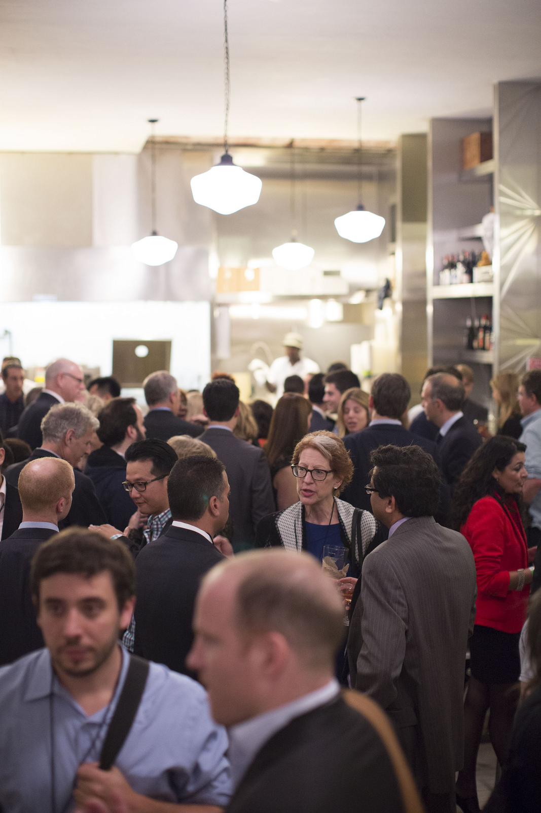
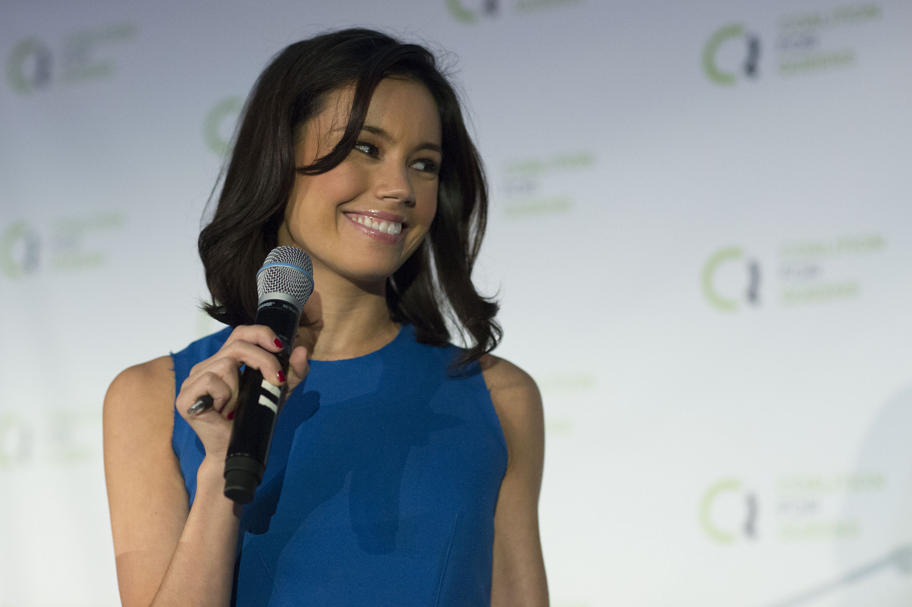
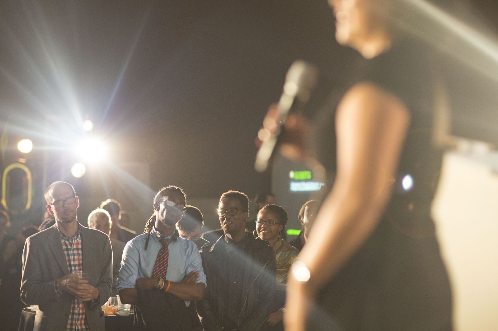
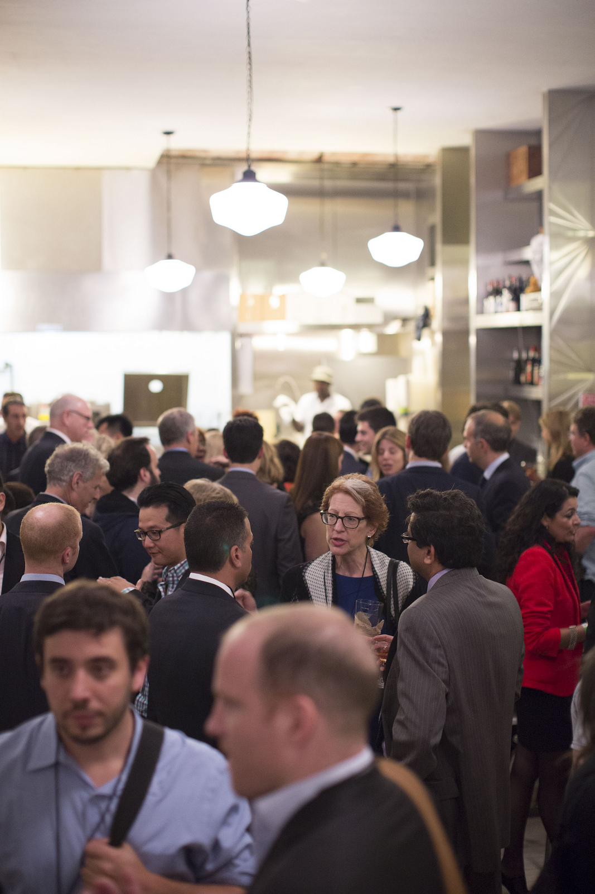
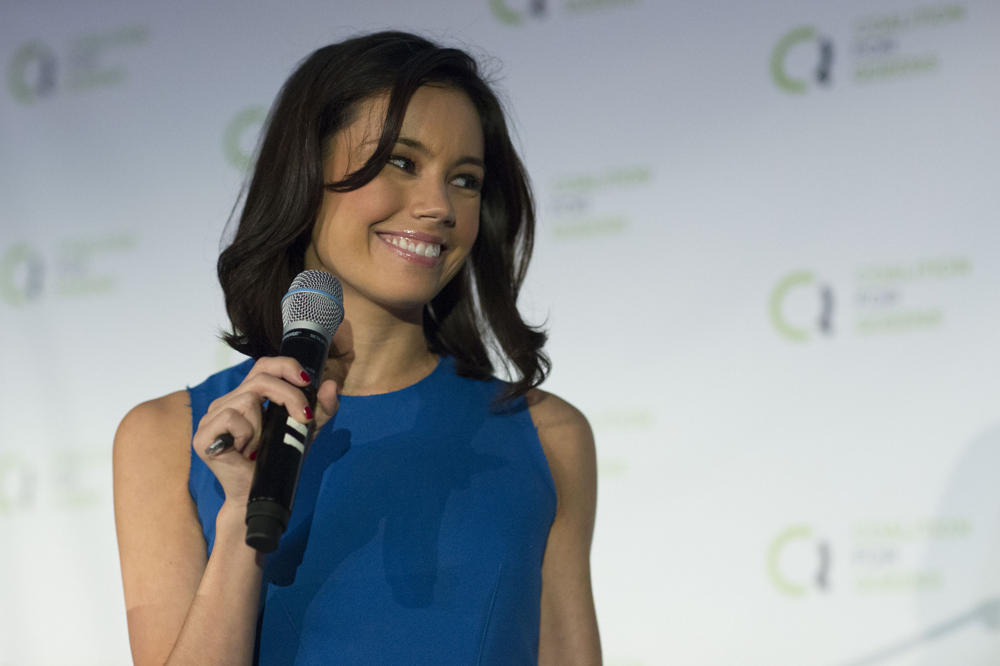
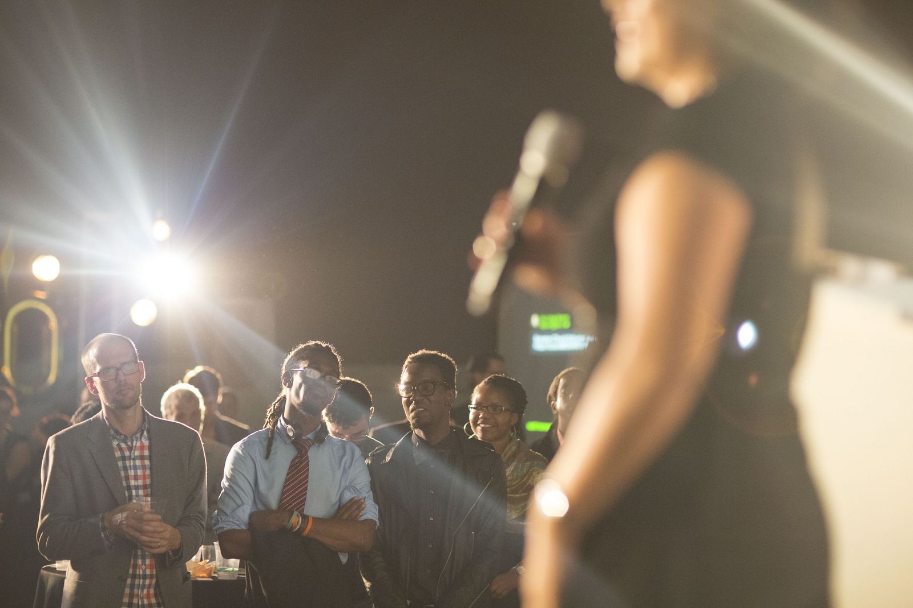


 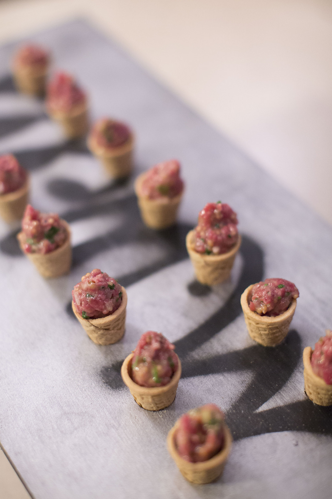
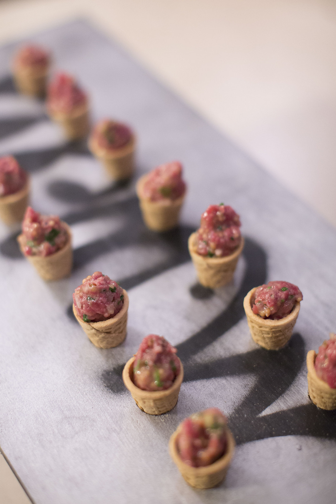

 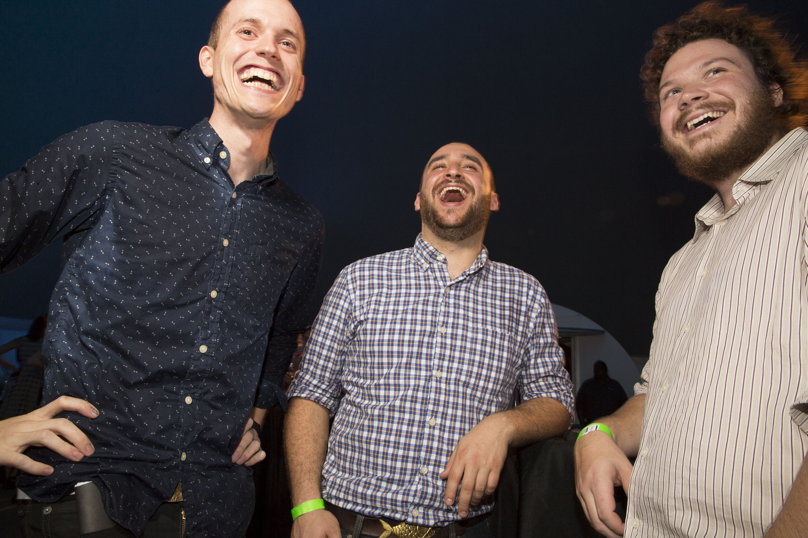
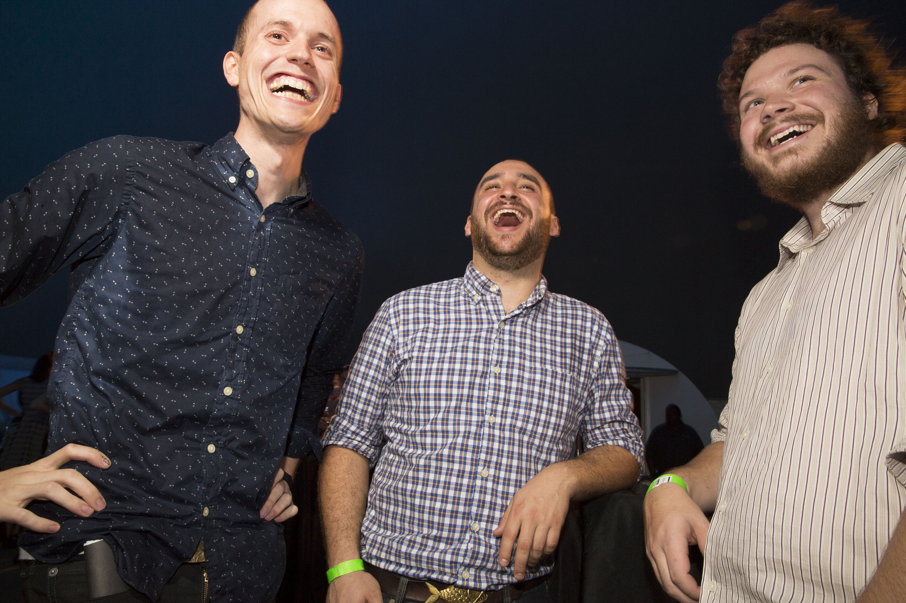


Thanks to everyone for making C4Q-Tech/Bash 2.0 a success!
Community Building

- 6 QTM (2,092 total members)
- Speaker Series
- Health Entrepreneurship with QC
NYC Tech Talent Summit
Smithsonian APA Wiki-a-thon
Strategic Plan Public Sessions
C4Q EDU
Our volunteer-driven workshops led by industry experts provide opportunities for community members to learn new skills and share expertise. By offering a variety of classes, ranging from introductory MySQL courses to more advanced topics like writing a basic web client in Python, C4Q EDU creates a supportive environment for our community to develop technical skills.
- Intro to MySQL, Dan Goldin
- Python and the Web, Greg & Alex
Access Code 1.0 Updates
Talent + Opportunity = Amazing Things
We knew that our Access Code 1.0 students possesed the passion, dedication, and hustle to be but we are still continually amazed at how much they have been able to achieve in such a short period of time. It's been a joy being able to share in their success.
- Student Highlights (student images, logos of companies)

Access Code 1.0 Updates
Access Code 2.0 Info Sessions
2015
Access Code 2.0
Other stuff we want to highlight and stuff we want to hint at: Innovation District etc
Thank You
A special thanks to the talented team members, advisors, and industry leaders for helping us grow this past year.

 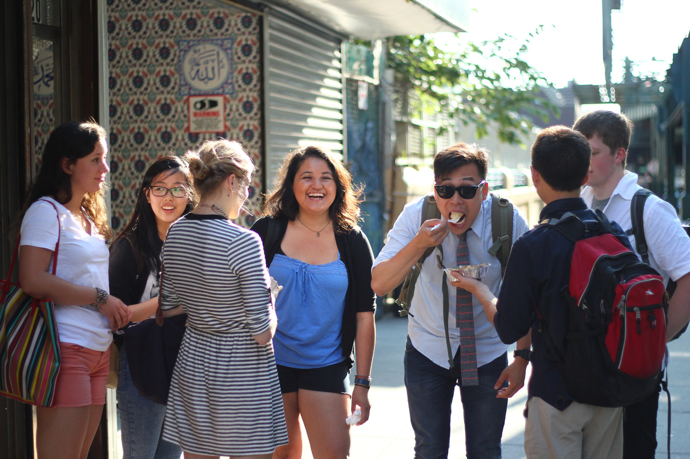
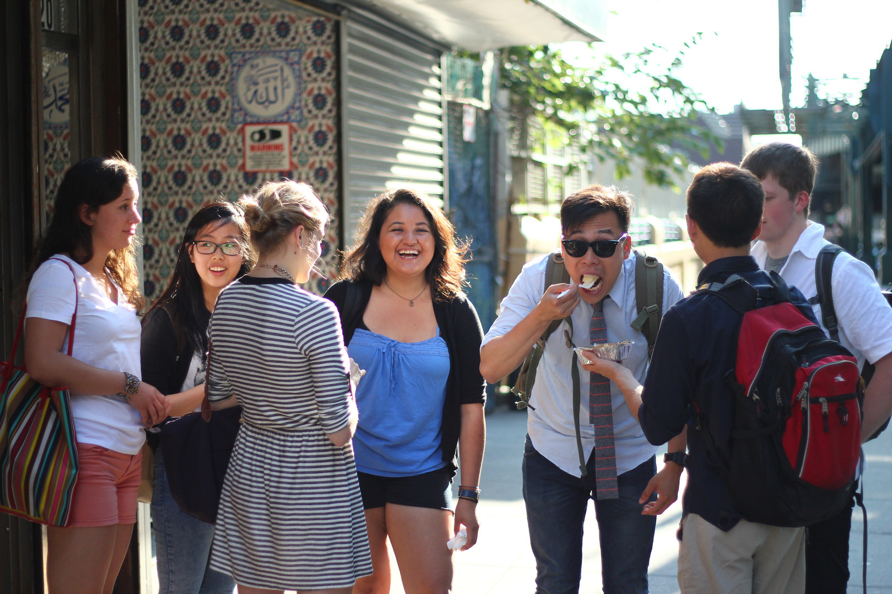
Image Credit: Kai Song-Nichols, 2014 Summer Intern